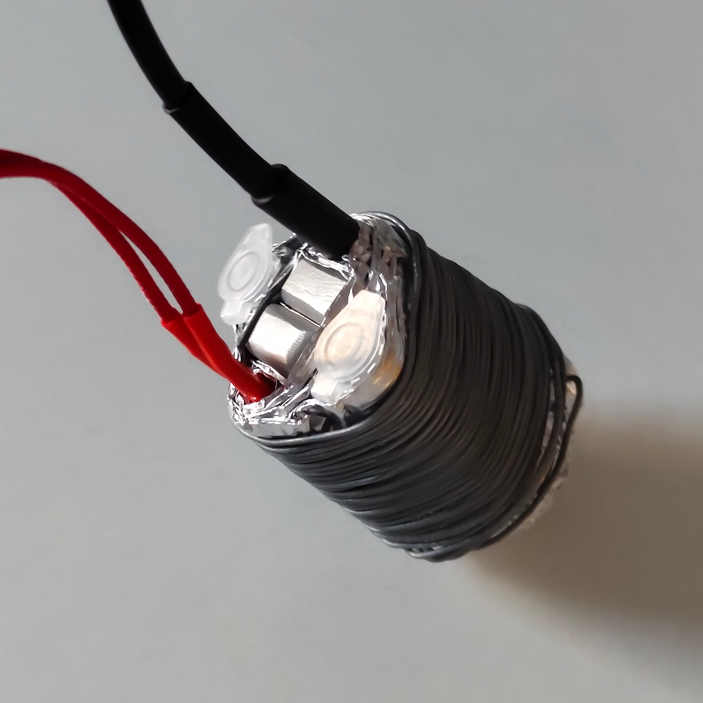

PCR

PCR Explained
Polymerase Chain Reaction (PCR) in a nutshell is a process that is used to multiplicate DNA. You supply a container with the single piece of DNA, Polymerase (special heatstable Protein), and nucleotides (the building blocks of DNA). Through thermal regulation of the container the following phases are repeated:
- Denaturation: DNA consists of two strands that hold each other through hydrogen bonds. By heating the DNA to roughly 96°C, the strands separate.
- Primer Annealing: Each primer can combine with a single strand at roughly 50°C.
- Elongation: A heatstable polymerase can bind on this primer and elongate to create a full double strand from the single stranded at roughly 76°C.
PCR Device Requirements
This whole process is based on regulating the temperature precisely. The device is not required to do anything else. Water can’t be used as the temperature could reach temperatures over 100°C. Aluminum is the easiest material choice as the thermal conductivity is high and aluminum foil is always available.
Architecture
The heat element heats up quickly and reaches high temperatures of over 250°C. Placing the temperature sensor right next to this element is not an ideal choice as you would expect high fluctuations. The further you place it away, the higher the delay would be until the metal between heats up. At the same time the sensor is made to regulate the temperature, which the eppis will have and not the metal case. Thereby the distance between heat element to eppi should be the same as the distance from heat element to temperature sensor.
The metal density should be as high as possible in the center to allow for a good thermal conductivity. Fortunately, I had small aluminum bricks available which I put in the center. The other pieces are put next to the core with the distances as close to that optimal distance, talked about before, as possible. In the end it all is stabilized using metal wire.
Cooling
There is no active cooling yet. For the PCR process this is not required and would work without it, but unfortunately it double or triples the total time required for a full PCR. Active cooling would be optimal but it could be sufficient to improve passive cooling by increasing the surface outside of the center.
Heat Timing
A controller must regulate the timing of when to heat and when to wait. Because of this sequential nature where the history is relevant for the future, the problem is more difficult. Applying Q-Learning (machine learning) is viable, but requires a lot of data to get an accurate result. Instead manual learning was applied by trying to find a function by hand.
To make the history irrelevant and thereby simplify the problem, a stable state is chosen. The state is considered stable, if the temperature decreases after the heat element was not turned on for x (x = 10, heuristic tested). A stable state behaves always the same way, passively cooling by the same amount until room temperture is reached.
The following two models are needed for full temperature regulation:
- Boosting: In a stable state you must choose how long to heat through your manually determined linear function. Then it cools down for a fixed time (12 seconds for me).
- Sustain: A stable state requires to begin a periodic heat-cool-sequence. The heat time is fix at 1 second, while a linear function should determine the cooldown time. During this sequence no stable state is reached, but by measuring the lowest and highest temperature reached during a period, you can determine the accuracy of your temperature and the middle.